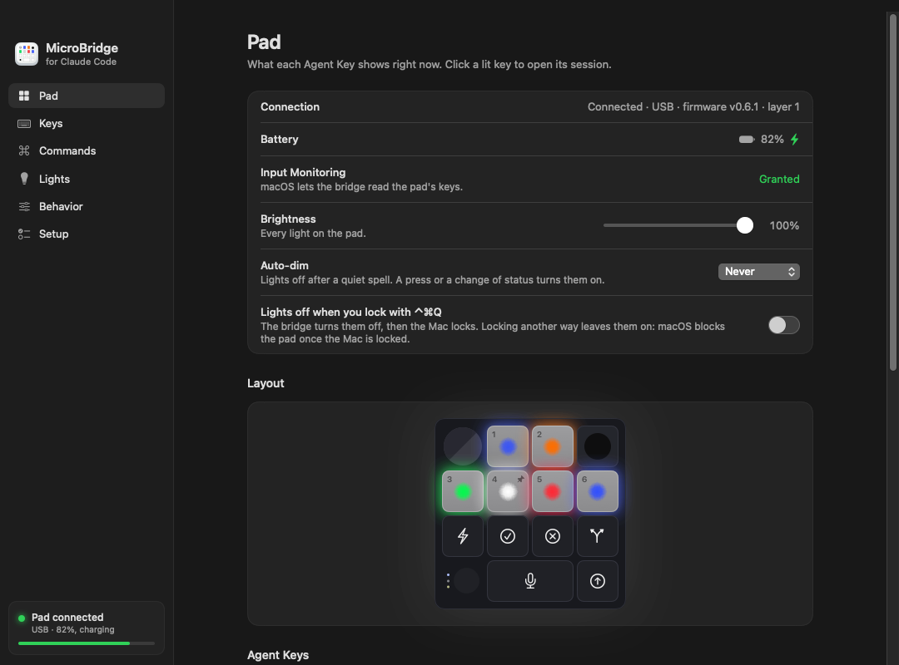

Unofficial · macOS · open source
Your Codex Micro, wired to Claude Code.
Six keys, six sessions. Each key glows with what its session is doing. A tap opens it. Approve, decline and answer question cards without reaching for the mouse.
Not affiliated with OpenAI, Work Louder or Anthropic. You need your own Codex Micro.
A drawing, not to scale. Click the keys.
One look tells you which session wants you.
- WhiteIdle. Waiting for your next prompt.
- BlueWorking.
- AmberNeeds you: a permission prompt or a question.
- GreenDone, and you have not looked yet.
- RedThe turn failed.
- Slow pulseThe session on screen right now.
What the pad does once it is plugged in.
aOne key per session
A session takes an Agent Key the first time it does something. Sessions in the Claude app and in a terminal both count.
bTap to open
A tap brings that session up in the Claude app. Hold the key for half a second to clear it.
cApprove and decline
The keys press the real buttons: "Allow once", "Deny", "Next", "Submit", "Skip", and the suggested next step.
dThe dial answers cards
Turn it to move through the answers of a question card. Press it to pick one.
eKeys remember
A session that ended keeps its key, and a tap opens it again. Keys also survive a restart of the bridge.
fMore than six sessions
The six most urgent sessions hold the keys. One that needs you takes the key of one that is only idle.
A small daemon between Claude Code and the pad.
Runs a hook on each event: a prompt, a tool call, a permission request, the end of a turn.
Gives each session a key and a light. Turns a key press into a key typed or a button pressed in the app in front.
Shows the lights. Sends its keys, dial and stick back.
Six commands, from clone to first light.
Get the code. You need macOS 14 or later and Swift 6. No toolchain yet? Run
xcode-select --installfirst.git clone https://github.com/Philopateer2099/micro-bridge.git && cd micro-bridgeCreate a signing certificate, once. Self-signed. It lets macOS keep the app's permissions when you rebuild.
scripts/make-certBuild and install. The app goes to ~/Applications and starts at login.
scripts/installGive it access. Then switch MicroBridge on under Input Monitoring and Accessibility in System Settings.
scripts/micro accessRestart the bridge.
launchctl kickstart -k "gui/$(id -u)/local.micro-bridge"Tell Claude Code to report to it. Adds one hook to ~/.claude/settings.json, after backing it up, or creates the file if there is none yet.
scripts/claude-hooks install
Every key is one line in one file.
Hold the dial to open the file. Save it, and the pad follows within a second.
A key can type text, send a key combination, press a button on screen, run a shell command or open a link. The same key can do one thing in the Claude app and another in a terminal.
Colors, brightness and the low-battery warning are in the same file.
Or open the window. MicroBridge.app shows the six keys live, lets you pick a command for each key on a drawing of the pad, and checks the setup step by step.
"keys": { "ACT06": "cmd:NEW", "ACT07": "cmd:APPR", "ACT09": ["sh:git stash", "text:stashed\n"], "ACT12": { "press": "key:return", "hold": "key:escape" } }, "lighting": { "colors": { "working": "#304FFE" } }

What it touches, and what it leaves alone.
- Five commands to the pad. Read the version and status, set the lights. It never writes to the pad's storage or firmware.
- No network. The hook and the daemon talk over a local socket. Nothing leaves your Mac.
- Two macOS permissions. Input Monitoring to read the pad. Accessibility to type keys and press buttons in the app in front.
- Open source. Swift, MIT license, no third-party code at run time. Read every line before you grant it anything.